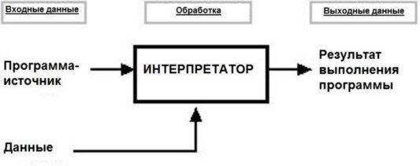

Что такое интерпретатор?
Интерпретирование - это процесс выполнения программного кода, который осуществляется специальной программой, называемой интерпретатором. В отличие от компилятора, который преобразует исходный код в машинный код заранее, интерпретатор выполняет код построчно, читая и анализируя его непосредственно во время работы программы.
Как работает интерпретатор?
Интерпретатор выполняет программу построчно, читая каждую инструкцию и преобразуя ее в исполняемый код "на лету". Это существенно отличает интерпретатор от компилятора, который преобразует весь исходный код программы в компилированный исполняемый файл до его запуска. Принцип работы интерпретатора базируется на двух основных этапах: разборе и выполнении кода. На этапе разбора интерпретатор анализирует исходный код, выполняет лексический разбор, создает абстрактное синтаксическое дерево (AST), что позволяет оперировать кодом программы на уровне его синтаксиса и структуры.
рис. 3. Схема интерпретирования
Основные виды интерпретатора
1. Интерактивный интерпретатор
Предоставляет возможность вводить команды на языке программирования и немедленно получать их результаты. Подобные интерпретаторы часто используются для учебных целей и в среде разработки.
2. Интерпретатор командной строки
Позволяет работать с заданным набором команд, выполняя их внутри оболочки командной строки. Такие интерпретаторы широко применяются в операционных системах для выполнения различных системных задач.
3. Сценарный интерпретатор
Предназначен для выполнения сценариев, написанных на скриптовых языках. С помощью сценарных интерпретаторов обеспечивается автоматизация повторяющихся задач, таких как обработка файлов, управление системами и т.д.
4. Интерпретатор языка Python
Специализированный интерпретатор для выполнения программ, написанных на языке программирования Python. Python пользуется популярностью благодаря своей простоте и возможностям в различных сферах разработки.
Основные различия между компилятором и интерпретатором
Различия между компилятором и интерпретатором наглядно можно увидеть в таблице, приведенной ниже
| Характеристика | Компилятор | Интерпретатор |
|---|---|---|
| Платформенная независимость | Компилированные программы обычно зависят от платформы, для которой они были скомпилированы. Например, исполняемый файл, созданный для Windows, не будет работать на Linux без перекомпиляции. | Интерпретируемые языки часто более платформенно независимы, так как интерпретатор может быть реализован для различных операционных систем. Например, интерпретатор Python доступен для Windows, macOS и Linux, что позволяет запускать один и тот же код на разных платформах без изменений. |
| Промежуточный код | Некоторые компиляторы, такие как Java-компилятор, генерируют промежуточный код (байт-код), который затем выполняется виртуальной машиной (JVM). Промежуточный код может быть выполнен на любой платформе, для которой существует виртуальная машина, что упрощает переносимость программ. | Интерпретатор обычно не создает промежуточный код, хотя есть исключения, такие как интерпретаторы, которые используют байт-код (например, Python). В таких случаях интерпретатор выполняет байт-код, что может улучшить производительность и переносимость. |
| Скорость выполнения | На начальном этапе требует больше времени, так как они переводят весь исходный код в машинный код перед выполнением | Мгновенно начинает выполнение кода, но может работать медленнее, т.к одновременно происходит анализ и выполнение кода |
| Обнаружение ошибок | Обнаруживает синтаксические и семантические ошибки на этапе компиляции, т.е есть возможность получить ошибки сразу после попытки скомпилировать программу | Обнаруживает ошибки во время выполнения кода. Это может быть полезно для быстрого тестирования и отладки, но ошибки могут возникать в неожиданных местах во время работы программы. |
| Удобство отладки | Компилятор предоставляет более детальную информацию об ошибках на этапе компиляции, что упрощает процесс отладки. Отладчики и профилировщики можно использовать для анализа производительности и выявления узких мест в коде. | Интерпретатор позволяет быстро вносить изменения и тестировать их, что делает процесс отладки более интерактивным. Интерактивные среды разработки (IDE) и REPL (Read-Eval-Print Loop) можно использовать для быстрого тестирования и отладки кода. |
| Примеры | C, C++, Go | Python, JavaScript, Ruby |